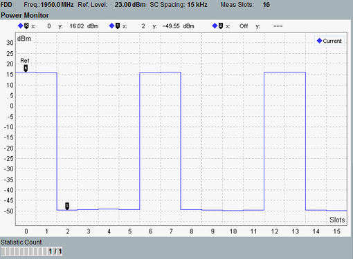

View Power Monitor
The power monitor view displays the power in the captured slots.

Power monitor
Each power value is RMS averaged over the entire slot, excluding 20 μs at each slot border. For 3.75 kHz spacing, the guard period at the end of each slot is also excluded.
The number of slots to be captured and shown on the X-axis is configurable, see "No. of Measure Slots".
The power monitor can be used for power control tests, see 3GPP TS 36.521, 6.3.5F "Power Control for category NB1".
For the parameters at the bottom, see "Common View Elements".
For query of the power monitor results via remote control, see "Power Monitor Results".